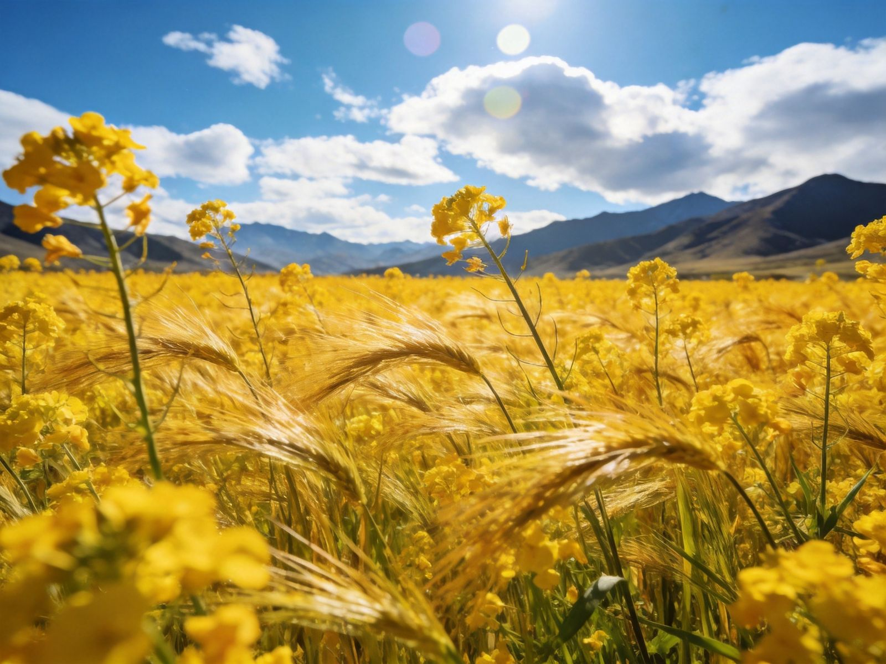

一分钟看懂先快速建立整体认知
MENYUAN AT A GLANCE门源位于青海海北，盛夏时节近百里油菜花田在祁连雪山脚下铺开，被列为中国十大最美油菜花海之一。核心体验是沿门源—祁连一段公路穿梭金色花海、以雪山为背景拍照，常与祁连大草原连成一条"花海+草原"黄金自驾线。花期短（7 月中到 8 月初），要卡准时间。
🌼 百里花海
🏔 雪山金浪同框
📷 公路大片机位
⏱ 花期短需卡点
提示：门源花海沿路边多可免费观赏，珍惜田间开放时间。